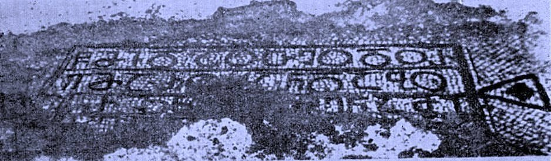

პალესტინის წარწერა IPalestine inscription I
პალესტინის წარწერა I
Palestine inscription I
შინაარსი / Summary
მოსახსენებელი Memorial
ბიბლიოგრაფია Bibliography
- წერეთელი, 1960, 94
- სარჯველაძე, დანელია, 1997, 28-31
- კორბო, 1953, 181-186
- თარხნიშვილი, 1954
- კორბო, 1955, 135-140
- ნუცუბიძე, 1959
- ქართლის ცხოვრება, ტ. II, 061
- ხურცილავა, 2016
კრიტიკული გამოცემა Interpretive Edition
წმიდაო თეოდორ -
ე მარ ოჳან და ბო(ე)რზნ
დიპლომატიური გამოცემა Diplomatic Edition
ႼႫႨႣႠႭ ႧႤႭႣႭႰ
Ⴄ ႫႠႰ ႭჃႠႬ ႣႠ ႡႭႰႦႬ

პალესტინის წარწერა I
{'default': 'წმიდაო თეოდორე, მარუან და ბურზენ... Saint Theodore, Maruan and Burzen…'}
{'default': 'წარწერის პირველი პუბლიკაცია ეკუთვნის მიხეილ თარხნიშვილს. მან პალეოგრაფიული ნიშნებით ეს წარწერა VI საუკუნით დაათარიღა.\n გიორგი წერეთლის დათარიღებით, წარწერა V საუკუნის 30-იანი წლებისაა.\n ასევე, მან გამოთქვა მოსაზრება, რომ წარწერაში მოხსენიებული საკუთარი სახელები, მარუან და ბურზენ, ოდნავ განსხვავებული ფორმით საქართველოში ცნობილი იყო.\n მაგალითად, პეტრე იბერიელის (V ს.) ქართული ცხოვრების მიხედვით, მისი ქართული სახელი იყო მურვანოსი, ხოლო მამამისს ბუზმირი ერქვა.\n შალვა ნუცუბიძემ 1959 წელს გამოქვეყნებულ ნაშრომში უდავოდ მიიჩნია, რომ ბეთლემის წარწერაში მოხსენიებული მურვანოსი პეტრე იბერიელის ერობის სახელია.\n მან წარწერა V საუკუნის პირველი ნახევრით დაათარიღა. გიორგი წერეთელმა განსაკუთრებული ყურადღება მიაქცია პალესტინის წარწერებს. იგი მიიჩნევდა, რომ\n წმიდა თეოდორეს სახელობის მონასტერი პეტრე იბერიელმა ააგო V საუკუნის 30-იან წლებში და მანვე შეამკო იგი ქართული წარწერებით, სადაც თვით მისი და მისი მამის\n სახელებია მოხსენიებული. თუმცა გიორგი წერეთლის დათარიღებას ზოგი არსებითი ხასიათის დაბრკოლება ეღობება. კერძოდ, წარწერაში მოხსენიებულ მარუანს უკავშირებენ მურვანოსს.\n რომ არაფერი ვთქვათ ფორმალურ (გარეგნულ) სხვაობაზე, ძნელად დასაშვებია, პეტრეს (ბერს, სასულიერო პირს) წარწერაში თავი საერო სახელით მოეხსენიებინა.\n მიუთითებენ იმასაც, რომ პეტრე იბერიელი პალესტინაში მოგვიანებით, 437-438 წლებში ჩავიდა და არა 429 ან 230 წელს. The inscription was first published by Mikheil Tarkhnishvili. He dated this inscription to the VI century according to the paleographic data. According to Giorgi Tsereteli, the date of this inscription is the 30s of the V century. He also suggested that the personal names that are mentioned in the inscription, Maruan and Burzen are a bit different compared to those that were spread in Georgia; for example, in the Georgian Chronicles the Georgian name of Peter the Iberian (V century) was Murvanos and his father’s name was Buzmiri.\nShalva Nutsubidze, in his research published in 1959, stated that it is undoubted that the name Murvanos from the Bethlehem inscription is the secular name of Peter the Iberian. He dated the inscription to the V century. Giorgi Tsereteli provided detailed analysis of the Palestine inscriptions and suggested that Peter the Iberian had built the St. Theodore Monastery in the 30s of the V century and embellished it with the Georgian inscriptions where he commemorates the names of himself and his father. But the date suggested by Giorgi Tsereteli has some weak points: it connects the name from the inscription, Maruan to Murvanos. Not to mention the difference in formal representation, it is hardly possible that Peter (who was a priest) would address himself with a secular name. It has also been pointed out that Peter the Iberian visited Palestine later in 437-438 years and not in 429 or 430.'}
<div type="edition" xml:lang="ka" ana="mtavruli" xml:space="preserve">
<ab>
<lb n="1"/><w lemma="ქრისტე"><expan><abbr>ქ</abbr><ex>რისტ</ex><abbr>ე</abbr></expan></w>
<w lemma="განსუენება"><expan><abbr>გა</abbr><ex>ნ</ex><abbr>ო</abbr><ex>ჳ</ex><abbr>ს</abbr><ex>უ</ex><abbr>ენე</abbr></expan></w>
<w lemma="სულ">სოჳ<lb n="2" break="no"/>ლსა</w>
<name nymRef="ვაჩა">ვაჩაჲს<lb n="3" break="no"/>ასა</name>
<name nymRef="გურა"><expan><abbr>გო</abbr><ex>ჳ</ex><abbr>რაჲ<lb n="4" break="no"/>სასა</abbr></expan></name>
<name nymRef="მირა"><expan><abbr>მ</abbr><ex>ი</ex><abbr>რა</abbr><ex>ჲ</ex><abbr>ს</abbr><ex>ა</ex><abbr>ს</abbr><ex>ა</ex></expan></name>
</ab>
</div>